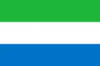

Melvin Ensah Bunduka
My name is Melvin Ensah Bunduka, I am from Freetown Sierra Leone, a small coastal nation in West Africa. My favorite things to do are football and reading especially the scriptures. I desire to become a skilled web developer and contribute to the growth of the tech industry in my country.

Sierra Leone is a country located on the west coast of Africa. It is known for its beautiful beaches, rich culture, and diverse wildlife. The country has a population of approximately 7 million people and its capital city is Freetown. Sierra Leone has a rich history, including being a major hub during the trans-atlantic slave trade. Today, It is known for its rich culture and hospitality of its people